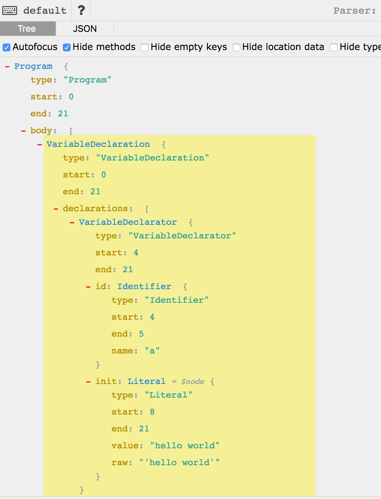

抽象语法树(AST)
抽象语法树入门到放弃？
抽象语法树（Abstract syntax tree AST）
在计算机科学中，抽象语法和抽象语法树其实是源代码的抽象语法结构的树状表现形式
为什么是抽象的？
前端工程化，离不了 AST
虽然AST是编译原理中的基础内容，但在大前端时代，它有很广的应用。
比如我们的babel、eslint、代码格式化、代码自动补全、代码压缩、JSX 甚至 Typescript 都是在 AST 上进行操作的。
初识 AST
AST 其实就是一个树状结构，
这里给出一个更好理解 AST 的工具 click
var a = 'hello world'
以上代码转换后：

这个结构包含了很多属性。
- VariableDeclaration 变量声明
- FunctionDeclaration 函数声明
- Expression 表达式
- ThisExpression this表达式
- …
你可以在文档里找到大部分属性 文档
可以在ES标准里找到所有属性 文档
AST 应用
应用AST，首先得先把 JS 代码转成 AST，然后用 文档中的 API 去修改树，修改完成后，再解析树并输出 JS 代码。
以下以 recast 举例。recast 是 Javascript 解析器，提供了AST接口。
安装
npm install recast
新建 parse.js
1 |
|
以上代码将 code 中的函数定义改成函数表达式
运行
node parse.js
命令行读取文件
recast 提供了 run 方法，来让我们在命令行里可以拿到js文件中的代码，像：
map.js1
2
3
4
5
6
7
8
9
10
11
12
13
14function c() {
}
function b() {
}
a();
b();
let a = 2;
let b = 3;
let c = 4;
c = a + b;
b = c + a;
a = c + b;
parse.js
1 | const recast = require("recast"); |
命令行输入
node parse demo.js
这样，我们就可以在 parse.js 内部，操作 demo.js 的语法树
树的遍历
如果我们想对代码里的所有函数、表达式或者命名进行批量操作。 recast 提供了 recast.visit 方法进行节点树的遍历。
比如以下代码是遍历 ExpressionStatement，只要文档中能查到的，都可以遍历对应的格式。1
2
3
4
5
6
7
8
9
10
11// map.js
const recast = require('recast')
recast.run(function(ast, printSource) {
recast.visit(ast, {
visitExpressionStatement: function({node}) {
console.log(node)
return false
}
});
});
很久之前的一个需求
在刚参加工作的时候，组长 给了我这么一个需求。
在以前因为某种原因，引入了 Jquery ，但只用了
$.extend方法，现在需要去除Jquery，重写这个方法。举个简单的例子。
当我重写完相关函数后，代码大概是这个样子。
1 | import { extend } from 'jquery' |
当时的做法是全局检索关键字 jquery，然后逐一去修改替换，如果需要修改的文件很多的话，一个美好的下午就没了。
当然，你可以直接检索 import { extend } from 'jquery' 然后一键替换，这样会有问题，比如有个人这样写代码import { extend} from 'jquery'，那就匹配不到了……
还有的人这么写代码
1 | import { extend} |
用 AST 怎么做呢？
1 | var fs = require('fs') |
结束
https://segmentfault.com/a/1190000016231512
https://astexplorer.net